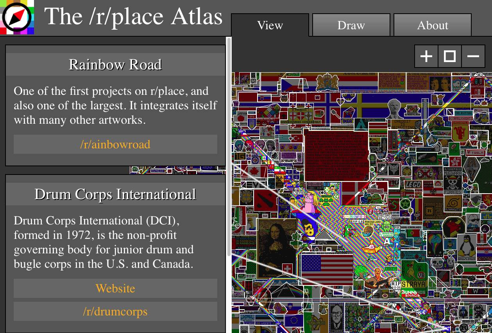
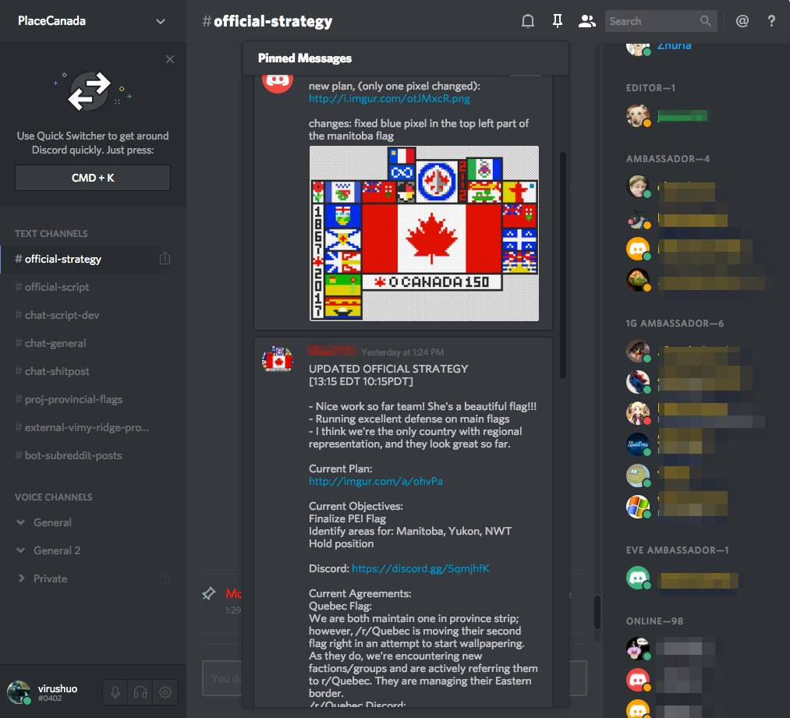
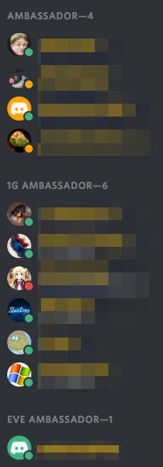
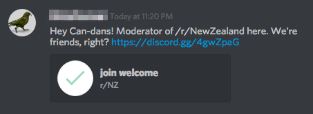
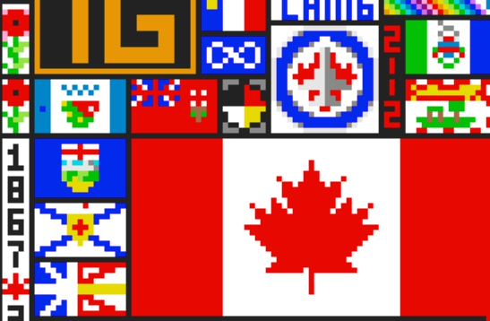
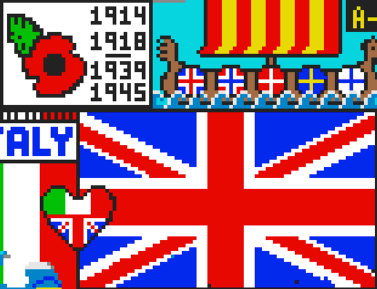
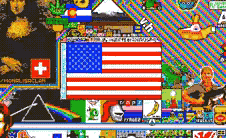
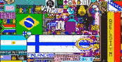

像素大战的72小时结束了，但传奇还没结束
Contents

我在上一篇文章里面写了reddit place的像素大战，当时游戏还在进行中。游戏总共进行了72小时之后正式结束，于是我又写了这个续篇，说说游戏的后半场的经历和感受，以及游戏正式结束之后还发生了什么。
游戏停止之后，所有人都不能在添加新的像素了，但参与者并未因此停下来。人们开始回忆这72小时发生了什么，寻找每一个精彩瞬间，进而开发各种周边应用。所有周边里面，我最喜欢的是这一个：

它叫做Place地图，由瑞士程序员Roland Rytz发起，并且按照GNU在Github上开源。我是加入这个项目的第20个人左右，并且连夜为它贡献了一点点代码，今天本来想再贡献一些代码，但是趴在这写文章，代码就只能暂缓了。
这个项目的目标是让人们在最终的画布上以标记多边形的方法来标记每一个图案背后的含义，从而让参与者能理解每一个组织到底创造了什么。到目前为止，它已经收录了1183多个条目。地图上被标的密密麻麻，非常壮观。
还有另外一个文字为主的项目“非官方/r/place wiki”通过Wiki的形式让大家撰写每个图案背后的发展历史和故事也非常值得一看。
除了文献类，还有各种衍生的艺术类项目，比如开始用乐高重现最终画布，有人用格子纸逐点手工重绘，有人在minecraft逐块重建…以及最夸张的，有人说要在美国买一块面积为一平方公里的土地，然后订制1000块1立方米的混凝土块，在真实的土地上重现最终的画布。当然……现在大部分人认为他是骗人的，因为这个计划耗资大的可怕，有人为他做了预算，整个项目会耗资将近9000万美元，看起来极其疯狂。但是……万一最终真的实现了呢？比如，假如他想通过众筹完成这个项目的话，我应该会愿意出我那一份钱的，希望有一天能真的实现，我会到这个地方参观，坐在我自己画的像素块上用无人机给自己拍个照片。
现实世界的各种作品都仍然是线上创造力和人类组织的延续，游戏刚刚停止的那一刻，应该没人想到它会通过这种方式继续延续下去，甚至可能永远延续下去。而在游戏的72小时过程中，还有很多值得一写的东西，篇幅所限，我只能选一部分写在这里。
最值得关注的仍然是人们如何组织起来，如何行动。最早的组织行程是基于兴趣的，其中最强大的是游戏社区、体育社区和开源社区。Linux做为开源社区的标志物之一，在整个72小时中都保持了压倒性优势。他们有现成的沟通渠道–在IRC上的聊天频道，有长期因为开源项目而形成的社区规范和协作基础，也有优秀的技术–每个人都非常熟悉计算机，很容易部署大量的脚本辅助工作。游戏社区则是另外一种姿态，他们的优势在于基于兴趣的组合，也有自己的协作工具discord，有基于游戏的组队协作和对抗经验，以及独特的资源：游戏主播。游戏主播通常有大量的粉丝，有非常强的名人号召效应。在这72小时中，最精彩的攻防战之一就是在游戏社区之间产生的。
下面这是OSU!被破坏又重建的瞬间。
OSU!游戏玩家众多， 他们聊天频道始终保持了1000人以上在线，700人以上参与建设，有专门的200多人负责防御。这次攻击号召者是Tyler1，Twitch的游戏主播，有50多万粉丝，在他的号召下瞬间OSU就被击溃，OSU本身实力也相当强，很短时间之后就重建完成了。
除了使用IRC的开源社区，大部分组织都在效仿游戏社区的组织形式，也学着使用游戏玩家的工具discord，我参与的PlaceCanada也是如此。以下是当时的截图。

在discord上，人们按照不同的工作角色分列在不同的频道里面，完成工作频道会关闭，有新的想法会创建新的供有兴趣参与的人加入讨论。下图是正在建设省旗、Acadia和北美原住民的药轮Logo时候的频道样子。在图上增加一个部分，一般流程是这样的：在公众频道讨论 -> 得到其他人响应 -> 建立单独频道讨论 -> 设计师帮助确定方案 -> 提交公众频道 -> 确认 -> 进入官方策略公布 -> 其他支持组跟进完成。这是一个非常流畅的流程，其效率之高简直不像是玩游戏，而像是一个配合默契的团队。唯一不同是所有倡议从提出到实现，都是完全自由讨论形成，没有公司那种从上至下的决策流程。
一群之前并不认识的人，会逐渐按照特长自发形成不同的职业。比如有维持讨论秩序和帮助组织完成觉得的组织者，有设计师帮助制作图样，有程序员实现工具，有熟悉多种语言爱说话的人负责和其他组织的交流…以及占大多数并没显示出特别特长，但是默默参与工作的人，遵从官方策略的人。每个人的角色都是自己选择的，干劲十足。
很多创意因此产生，并且被迅速执行。比如德国和比利时两国的这个创意：
德国和比利时的国旗是同样的三种颜色，只是方向和顺序不同，又正好相交。于是他们在交界处画了两国国家标志性食物，啤酒和香肠，并且用比利时的国旗红/黄两色变型为正在滴下的两种常见酱汁，黄色的芥末，红色的番茄酱。令人惊叹的的创造。
还有一些偷袭的创意也很有意思，比如这张：
法国人在自己的国旗上画上了各种他们自豪的食物，比如法棍面包和红酒，然而你仔细看红酒瓶子上是什么？一面小小的意大利国旗。意大利人偷袭法国得手，竟然一直没被法国人发现清除掉。不知道当时意大利人的聊天频道里面会笑成什么样。
除了每个社群自己的组织形式，社群之间的交流方式也很值得关注。在这72小时里面，外交手段被人们应用的淋漓尽致。到最后一天的时候感觉像在玩《文明》或者《钢铁雄心》，征募、外交、内政、科技、情报每一项工作都非常重要，都可能影响全局胜负。外交的重要程度和真实世界也差不多，互相派大使进入对方聊天频道成了成熟的模式。
下图是部分大使分组，来自接壤的1G和EVE群组使团人数众多，被单列了分组。

之后还会出现这样的事件，喜欢玩《文明》的读者应该这一幕有点熟悉吧？

这张图是新西兰邀请加拿大建立外交关系“Hi，加拿大，我是新西兰的管理员，我们是朋友对不对？”给出了一个进入新西兰聊天频道的邀请。

以及英国和加拿大建立外交关系 “Hey，加拿大，英国为你们开设了官方外交频道。”
在这个过程中，不同国家之间共享的历史和文化背景非常有帮助。比如加拿大偶然得到了一小块空地，大家根据空地形状讨论，最终决定画虞美人花(Poppy)，虞美人花是英联邦国家纪念一战二战两次世界大战的标识，所有英联邦国家都会在战争纪念日的时候佩戴虞美人花。设计师完成图样设计之后，大家觉得应该和其他英联邦国家群组共享设计和创意。很快得到了英国的响应，最终英国也找了一块空地完成了虞美人花。在这些交流过程中，大家也逐渐形成了共同防御的共识。

图：加拿大的虞美人花，左上角

图：英国的虞美人花，左上角
游戏中最大的破坏组织黑洞组织没有消亡，他们仍然存在，并且从4chan上召集更多人手发动进攻。它的存在让更多组织结成盟友，黑洞曾经发起了一次从左上角开始的吞噬大战。它的扩张使得加拿大和周围组织确定了共同防御原则，比如加拿大上方的强大组织”魔法少女小圆”，按照黑洞的行进路线他们会更早遭到攻击，因此大家结盟了。双方还创造了这样一句话：“加拿大和魔法少女小圆有Place上最长的不设防边界”，在现实世界，这句话的原文是“加拿大和美国有世界上最长的不设防边界”。

图：算上单独的那一面魁北克旗，加拿大和魔法小圆的共同边界真是非常长的。
当周围10多个组织联合起来，等着黑洞冲锋过来的时候，突然间，黑洞放弃了左上角，开始进攻画布中间的美国国旗。也许对于所有恐怖分子来说，拿下美国都是他们最大的梦想吧……
当时是东部时间凌晨5点多，这个时间点选的非常好，是北美国家的薄弱时刻。在那个时候，西海岸人们刚刚入睡，东海岸还没起床。除了少量维护用的脚本机器人和我这种夜猫子，北美国家都处于不设防状态。黑洞成功了，美国国旗被黑色吞噬了。但是仍然没过多久，一面新的美国国旗又从废墟上复活，那一刻非常令人感动，当时的场景在这里：

如此迅速的恢复，一方面是美国用户在Reddit上比例最大，另外一方面，我想其他不相关的人也在帮忙对抗黑洞，毕竟没有人愿意看到黑洞成功在画布上留下长久的印迹。它让我想起了911之后各盟国对美国的支援，以及美国从那场巨大的灾难中恢复过程。一切都像是真实世界的映射，在国旗恢复的那个时刻，我感觉到的并不是美国胜利了，而是文明的一方胜利了。
在此之前，黑洞还在4chan上集结了700多人，对巴西国旗发起过一次攻击，700多人一致行动已经是一支巨大的力量，然而那一次的失败非常搞笑。巴西和他们的盟友芬兰、阿根廷以及周围其他组织齐心协力，在巴西国旗侧面的救世基督像手中画出了一束激光，激光冲向黑洞，黑洞就此消散。这是一个天才的点子，其立意和视觉效果都数一数二，也是这72小时中最有趣的片段之一。看视频：

在这短暂的72小时中，这样有趣的事情有无数件，我在这里无法把每个故事都都写下来， 当然我知道的本来也只是其中极少的一部分，正如我们在现实世界中也只知道历史中极少的几个片段。不过如开始所说，人们仍然在一点点翻找视频，发现里面那些有意思的片段。在Place地图和Wiki上，每个组织都在讲述着自己经历的故事。更多的衍生品每天还在继续被创造出来，这72小时已经成了人类历史的一部分。r/thefinalclean 组织了近千人，一个像素一个像素的人工清理最终画布上零散的无用像素，提升视觉效果使之更像艺术品，他们也刚刚发布了最终完成的10K高清高清版。这样的项目不知道有多少正在进行中。
从游戏开始一直到现在，看着这些无穷无尽出现的故事和衍生品，我觉得非常开心。尤其是在如今世界走向孤立主义的时代，这个无数人共同创建、贡献、完善、创意的项目，这个从一开始就充满了不同背景人群的互助、联盟的项目，它给了我难以形容的感动。
谢谢你，Reddit。期待明年的愚人节。
推荐阅读另外一篇文章，《从“世界名画”浅谈电子游戏与互联网文化的对立与融合》，是游戏社区的人们通过这次活动讲他们对游戏、艺术、文化的理解。是和我不同的角度，也很值得看。
参考备注：
- 标题图截图自 Reddit Place地图 https://draemm.li/various/place-atlas/
- 里面其他所有图，都是 从 https://www.reddit.com/r/place/ 找到或者截图得到的。著作权不知道，应该算大家共有吧。
- 想看完整视频的话，文中提到的工具在这里： http://spacescience.tech/place/ （发这篇文章的时候这个网站挂了，但估计很快会恢复的）
- Reddit Wiki https://www.erwinolie.nl/place/doku.php
- 本文的上一篇在这里： 参与这场线上大战之后，我觉得人类未来还是有希望的
Author Huo Ju
LastMod 2017-04-06